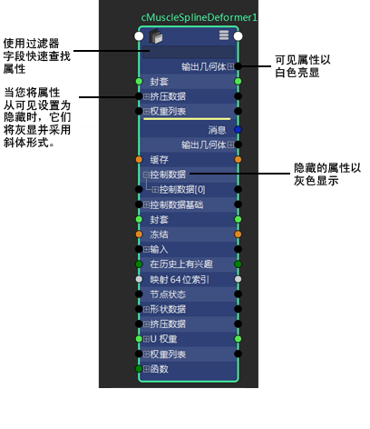
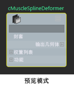

可以自定义为每种节点类型显示的属性列表。
本主题同时适用于节点编辑器和 Hypershade。
若要创建自定义属性列表，请在节点上单击鼠标右键，然后选择“编辑自定义属性列表”(Edit Custom Attribute List)。然后，您可以使用视图模式 4 在自定义属性视图中显示节点。
创建自定义属性列表
- 在节点上单击鼠标右键，然后选择“编辑自定义属性列表”(Edit Custom Attribute List)。
该节点将切换到编辑模式，并以黄色边框亮显。所有可见属性将以白色亮显。所有隐藏的属性将以灰色显示。
如果您以前从未编辑此节点的属性列表，那么将列出该节点的所有属性，并且所有主要属性将设置为可见。换句话说，可见属性列表与视图模式 3 中的可见属性列表相同。
如果此节点目前存在自定义列表，那么会在将属性保存到列表中时列出这些属性。
该节点是在不使用任何连接端口的情况下绘制的，并且所有连接以灰色进行绘制。该节点也将原地锁定，并且无法对正在编辑的节点进行任何连接。（如果您尝试在“节点编辑器”(Node Editor)中对其他节点进行连接，您将退出编辑模式。）
- 切换属性，以将其设置为不可见或隐藏：
- 若要使属性可见，请切换该属性以便使其以白色亮显。
- 若要隐藏可见属性，请切换该属性以便使其以灰色或斜体显示。
注： 使用过滤器字段快速查找您想设置为可见或隐藏的属性。 - 使用鼠标中键拖动属性来更改列表中属性的顺序。
- 通过执行以下操作之一提交更改：
- 单击节点上的视图模式图标

- 选择其他节点
- 在节点上单击鼠标右键以访问标记菜单，然后禁用“编辑自定义属性列表”(Edit Custom Attribute List)。
提交更改后，您的自定义属性列表将另存为模板并保存到 $MAYA_APP_DIR/<app_ver>/[localized]/prefs/viewTemplates/ 中其文件名为 NE<NodeType>Template.xml。
注： 这是保存节点编辑器模板文件的默认位置。通过设置 MAYA_CUSTOM_TEMPLATE_WRITE_PATH 环境变量，可以覆盖此位置。提交更改后，类型相同且已显示在自定义模式中的所有其他节点，将自动刷新以显示更新的自定义属性列表。
注： 若要在不提交更改的情况下退出编辑模式，请按 。
。 - 单击节点上的视图模式图标
编辑模式菜单
-
“预览”(Preview)：预览提交更改后节点的显示方式。节点将以属性的显示顺序列出所有可见属性。将在“节点编辑器”(Node Editor)的右上角显示平视显示仪，通知您单击鼠标以退出“自定义属性预览”(Custom Attribute Preview)。
您可以按 Esc 或单击鼠标以退出预览模式。
- “全部隐藏”(Hide All)：将所有属性设置为隐藏。
- “全部显示”(Show All)：将所有属性设置为可见。
- “还原”(Revert)：还原为进入编辑模式之前的设置。
- “重置视图”(Reset View)：将设置重置为视图模式 3 的设置，即，所有主属性可见。
显示自定义属性视图
若要显示自定义属性视图，您可以执行以下操作之一：
- 使用 4 热键
- 单击“节点编辑器”(Node Editor)工具栏上的
- 将单个节点右上角的视图模式图标循环切换为
- 选择“编辑 > 自定义模式”(Edit > Custom Mode)
对于其他视图模式而言，您可以显示单个节点、选定节点或所有节点的自定义属性视图。
如果选择多个节点（或不选择任何节点），并切换到自定义模式，则具有自定义属性模板的每个节点将显示其自定义属性视图，而没有自定义属性模板的每个节点将以完全模式显示。
自定义属性模板适用于具有相同类型节点的所有实例。例如，如果为 pSphereShape1 创建自定义属性列表，则 pSphereShape2/3/4 等将全部使用相同模板。但是，也可以为特定的节点创建节点编辑器模板。若要执行此操作，请手动重命名已保存的 .xml 文件以包括节点名称：NE<NodeType>.<NodeName>Template.xml。
将自定义属性列表保存为模板并在网络上共享
创建自定义属性列表后，默认情况下，该列表将另存为模板并保存到 $MAYA_APP_DIR/<app_ver>/[localized]/prefs/viewTemplates/ 文件夹中。通过设置 MAYA_CUSTOM_TEMPLATE_WRITE_PATH 环境变量，也可以覆盖此位置。
通过将模板放置在网络位置上，然后将 MAYA_CUSTOM_TEMPLATE_PATH 环境变量设置为您保存模板的网络位置，可以与其他用户共享模板。可以将此环境变量设置为多个路径。MAYA_CUSTOM_TEMPLATE_PATH 支持在 Windows 上以 ; 分隔或在 Mac OS X/Linux 上以 : 分隔的多个路径。
在您创建节点时，Maya 按以下顺序搜索节点编辑器模板。使用找到的第一个模板：
默认情况下（即未设置 MAYA_CUSTOM_TEMPLATE_PATH）：
- ..\prefs\viewTemplates
- ..\scripts\NETemplates（在安装目录中）
否则，如果已设置 MAYA_CUSTOM_TEMPLATE_PATH：
- MAYA_CUSTOM_TEMPLATE_PATH
- ..\scripts\NETemplates（在安装目录中）
有关首选项的保存位置的详细信息，请参见保存首选项。
辨别具有自定义属性列表的节点和没有自定义属性列表的节点
单击热键 4 或工具栏中的 或者选择“编辑 > 自定义模式”(Edit > Custom Mode)时，具有对应自定义属性列表的节点会在右上角显示 ，而没有对应自定义属性列表的节点会在右上角显示  。
。